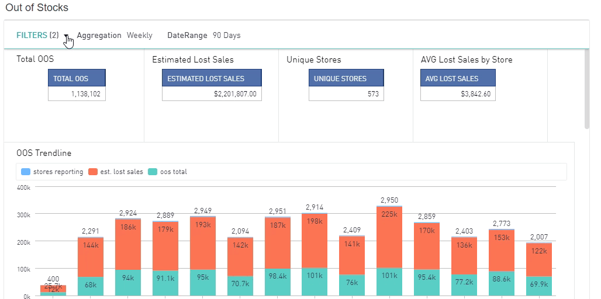

How To's
Aggregation Filter
Dashboards trendlines can be viewed over specified periods of time aggregated by your selection in the filter.

Custom Date Range
To select a desired date range for your dashboard, open the filter options and under date range select "Custom Range". This will be where you can insert a start and end date by selecting the calendar icon or manually typing it in the text box. Once your date range is selected, press the "Apply" button at the bottom right of the filter box.
Downloading Chart Data
The underlying dataset of any chart can be downloaded as a CSV file by selecting "Download Data".

Downloading Chart Image
Graph-like charts can be downloaded as a PNG file through the "Download Image" option.

Dashboard Menu Navigation
By selecting the "Dashboards" option located at the top of your screen you will be able to view all the dashboards and reports available. Click on the desired dashboard or report and it will automatically display on the screen.
Removing Filters
In order to remove the filters you have previously selected you will need to open the filter box and deselect the chosen criteria. Once you have removed the filters you will need to press the "Apply" button.
Search Filters
In order to perform a search you will need to open the filter box. At the top of each filter you will see a "Search" textbox. Type in the search box for your desired filter and once it appears below, select the checkbox. In order to search for a store number you will need to enter a # sign before the store number. Once the search criteria is selected press the "Apply" button.
Select/Remove Legend Options
Charts that display a legend give you the abilty to select or remove options to further identify trends and data points.
Using Filters
To add an existing filter to a dashboard, click on the Filters ribbon right below the dashboard name. Once you have selected the fields you wish to filter by, press the "Apply" button and all charts will return your selected data.
View Map
In order to re-size the map to zoom in or out use the +/- icon located at the top left of the map. Once you have zoomed into the desired location you can hover over the data points to view detailed information.

Zooming in Charts
To zoom on a chart, click on the graph and choose the beginning of the range to zoom in on, dragging and releasing the cursor at the end of the range.